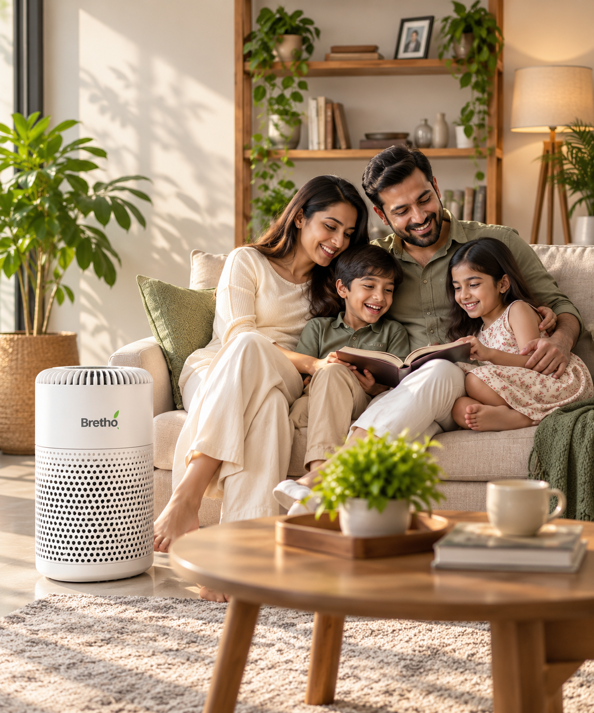

01
Layered filtration
Pre-filter, HEPA 13 and Activated carbon.
Bretho Air Purifier brings together layered filtration, UV-C technology and negative-ion technology in a compact form designed for everyday indoor air care.

The Bretho experience keeps the important parts visible: the filtration path, the controls and the available testing records.
Pre-filter, HEPA 13 and Activated carbon.
Safety documentation identifies a 254nm UV-C emitter.
A dedicated ionizer control is built into the top panel.
Low, medium and high operating settings.
ERP testing recorded 0.33W standby-mode power for the selected variant.
Safety, EMC, energy and material-related reports are available for review.

The three-stage filter is paired with UV-C and Air-ionizer functions.
Captures larger dust, hair and lint.
Fine-particle filtration layer.
Helps address odours and gases.
UV-C technology with a documented 254nm emitter.
Negative-ion technology with a dedicated control.

Smart, responsive and effortless. Control every function with a gentle touch.
Three operating speeds.
Dedicated UV control button.
Dedicated negative-ion control.
Everyday-use controls integrated into one surface.
Discover the technology, understand the testing, and choose your next step.